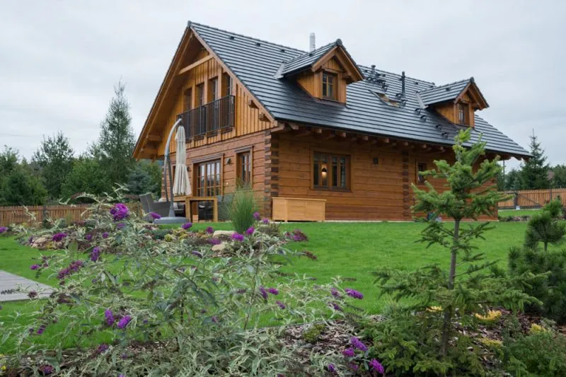
Ocenění
Natřeli jsme Dřevostavbu roku 2013
Vítězem soutěže Dřevostavba roku 2013, kterou pořádá časopis sruby & roubenky, se stal srub Tereza od firmy HANIŠ – Srubové domy. Jeho nátěr je naše práce.
Pavel Ehl · malířské a natěračské práce od roku 1990
Vrátíme dřevu krásu a ochráníme ho na další roky. Brousíme ručně, natíráme štětcem a nátěrový systém volíme podle konkrétního domu – po celé České republice.
Služby
Specializujeme se na sruby, roubenky a masivní dřevostavby – od renovace zašedlého dřeva po finální nátěr interiéru.
Zašedlé, popraskané nebo loupající se dřevo ručně přebrousíme až na zdravý povrch. Odstraníme starý nátěr i zašednutí a dřevo připravíme na nový nátěr.
Lazury, oleje i krycí barvy volíme podle druhu dřeva, orientace domu, přesahu střechy a nadmořské výšky. Nanášíme štětcem, aby nátěr dobře zakotvil.
Včelí vosk a přírodní oleje zachovají dřevu jeho kresbu, barvu i vůni. Pro barevné povrchy volíme materiály na přírodní bázi a tam, kde je potřeba vyšší odolnost, osvědčené moderní nátěrové systémy.
Utěsníme spáry a praskliny mezi kládami pružným tmelem (Woodchink), aby do konstrukce nezatékalo a dům zůstal dlouho v dobré kondici.
Odstín vybíráte podle vzorku nataženého přímo na dřevě vašeho domu. Barvu umíme namíchat na míru – třeba aby navázala na původní nátěr nebo okna.
Na jižní a jihozápadní straně vydrží kvalitní venkovní nátěr zhruba čtyři roky, přírodní olejové nátěry asi polovinu této doby. Nejlepší je přetřít dům ve chvíli, kdy ještě vypadá pěkně – při delším odkladu dřevo černá a renovace je náročnější i dražší.
Jak pracujeme
Každý dům je jiný. Proto nejdřív posoudíme stav dřeva a teprve pak navrhneme postup i materiál.
Pošlete nám fotky nebo zavolejte. Přijedeme, posoudíme dřevo, starý nátěr i okolí domu, navrhneme nátěrový systém a připravíme přesný rozpočet.
Starý nátěr a zašedlou vrstvu odstraníme ručním broušením. Na rozdíl od tryskání lze lépe opracovat i nerovnosti trámů.
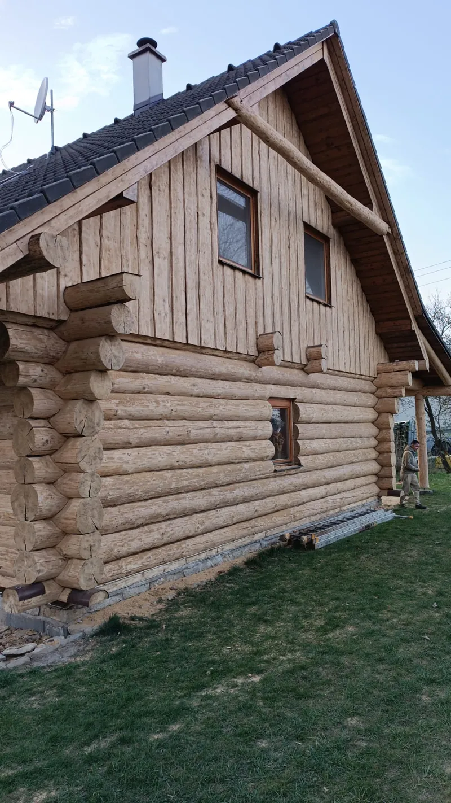
3Utěsníme praskliny a spáry, ošetříme poškozená místa a čela kulatin, aby nový nátěr měl pevný základ.
 4
4
Nanášíme ručně štětcem ve více vrstvách, v odstínu, který si předem odsouhlasíte na vzorku. Barva se vetře do dřeva a přilne lépe než při nástřiku.
Řada firem dnes povrch srubu tryská abrazivem (třeba kukuřičnou drtí) a barvu nanáší stříkací pistolí. Je to rychlejší, a proto často i levnější. My všechno brousíme a natíráme ručně – postup i výsledek jsou jiné. Volba je na vás, rádi vám rozdíl ukážeme přímo na vašem domě.
Z rozhovoru s Pavlem Ehlem pro časopis sruby & roubenky – přečíst celý rozhovor
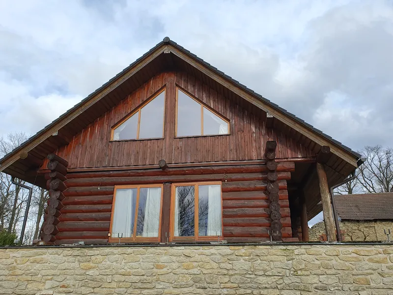
1 · Původní nátěr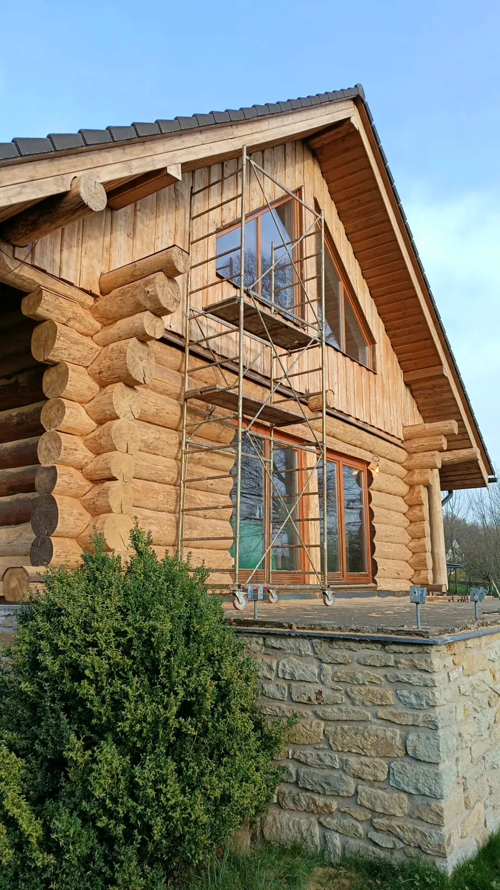
2 · ObroušenoReference
Výběr z posledních let. U renovací najdete v rohu fotky i původní stav – kliknutím otevřete celou sérii od začátku do konce.
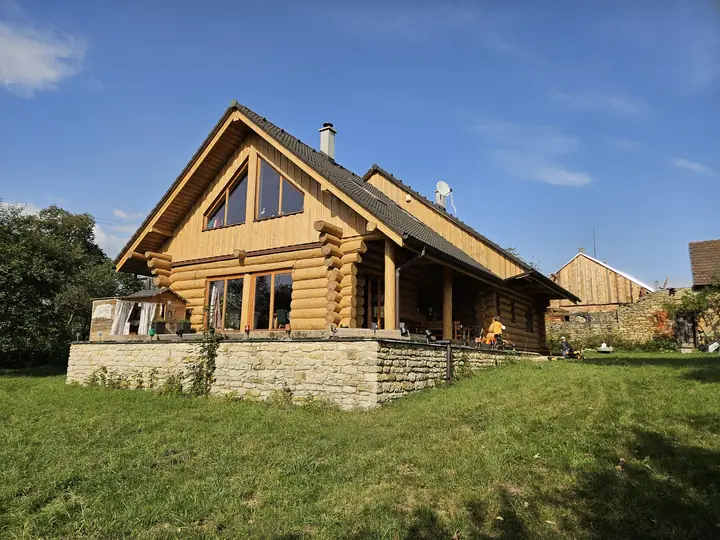
11 fotek před 6 fotek
6 fotek
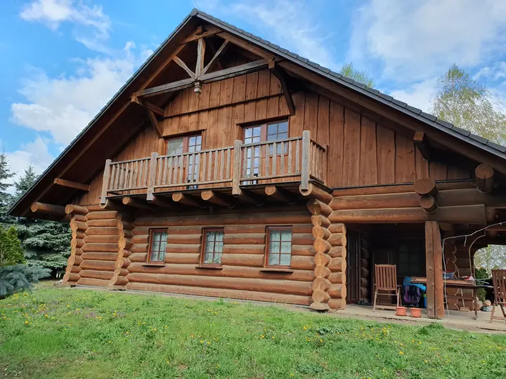
před 4 fotky
4 fotky
 před
před
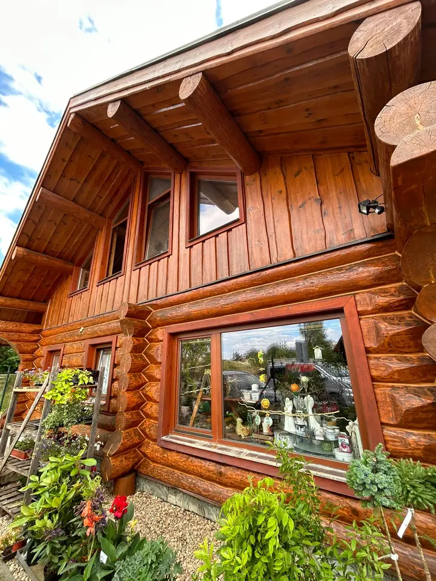
3 fotky před
před
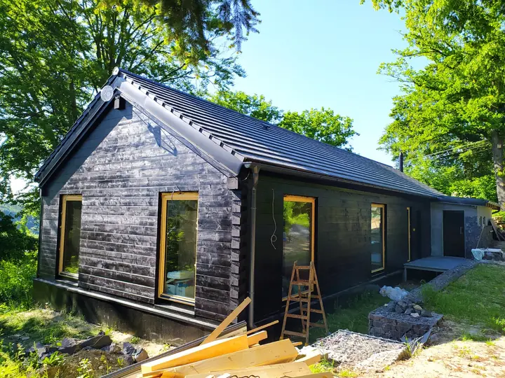
1 fotka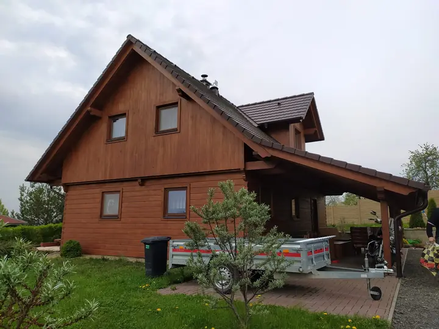
3 fotky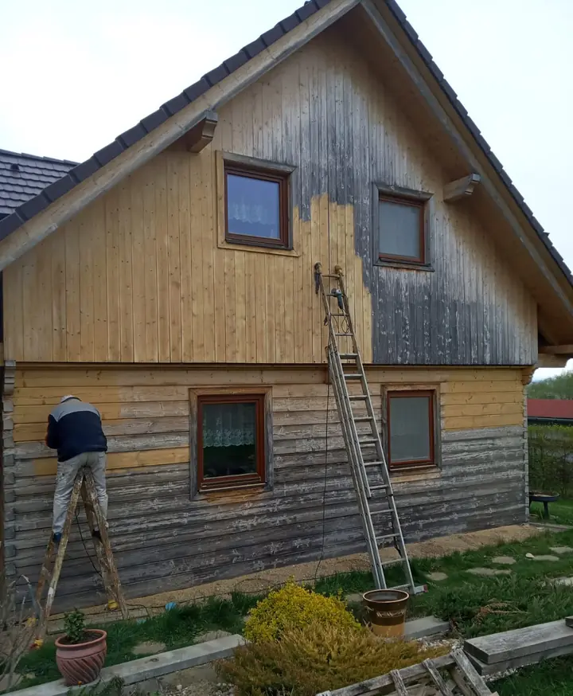
před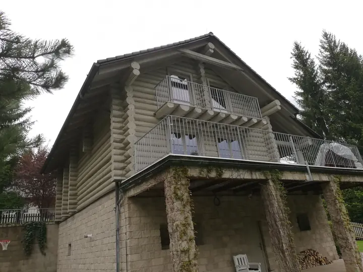
2 fotky 2 fotky
2 fotky
Výběr obcí, kde jsme natírali sruby, roubenky i další stavby.
Hranice státu: © přispěvatelé OpenStreetMap
Napsali o nás
Na odborných článcích o nátěrech a údržbě dřevostaveb se Pavel Ehl podílel s časopisem sruby & roubenky a portálem drevoastavby.cz.

Ocenění
Vítězem soutěže Dřevostavba roku 2013, kterou pořádá časopis sruby & roubenky, se stal srub Tereza od firmy HANIŠ – Srubové domy. Jeho nátěr je naše práce.
časopis sruby & ROUBENKY 1/2024
drevoastavby.cz
Nový srub pro krátkodobý pronájem v chorvatském Brodu na Kupi – tentokrát ne o stavbě samotné, ale o jejím povrchovém ošetření.
drevoastavby.cz
Přírodní dřevo na každém kroku je důvod, proč si lidé vybírají dům z masivu. I dřevěné stěny v interiéru ale můžeme nátěrem doladit.
drevoastavby.cz
drevoastavby.cz
Co dělat, když nátěr nebyl kvalitní nebo dům nebyl dlouho udržovaný? První rada zní: experimentování na vlastní pěst se nevyplácí.
drevoastavby.cz
drevoastavby.cz
rozhovor, časopis sruby & roubenky
Jak se z mladého člověka stane natěrač-profesionál, proč brousit a natírat ručně a jak dlouho nátěry vydrží.
časopis sruby & roubenky 2/2014
Kdo odpovídá za vady nátěru – dodavatel barvy, nebo firma, která ji nanesla? A podle čeho vybrat nátěrový systém?
O nás
Firma Ehl nabízí malířské a natěračské práce od roku 1990. Začínali jsme nátěry ocelových konstrukcí, malbami interiérů a fasádami. Od roku 2000 se věnujeme dřevostavbám a nátěry srubů a roubenek se staly naší specialitou.
Jezdíme po celé republice – od Krušných hor po Beskydy. Pro konkrétní zakázku vám rádi připravíme přesný rozpočet.
„My všechno brousíme i natíráme ručně. Vetřením štětcem do povrchu dřeva se barva lépe ukotví a přilne než při pouhém nástřiku.“
Časté dotazy
Odpovědi vycházejí z více než třiceti let praxe. Když tu svou otázku nenajdete, zavolejte.
Záleží na tom, jak je dřevo namáhané počasím. Na jižní a jihozápadní straně vydrží odolnější nátěry zhruba čtyři roky, přírodní olejové nátěry asi polovinu této doby. Přetírat je nejlepší ve chvíli, kdy dům ještě vypadá pěkně – při delším odkladu dřevo černá a renovace je náročnější i dražší.
Ne vždy. Když se nátěr obnovuje včas, stačí povrch připravit a přetřít. Obroušení až na dřevo je nutné, když nátěr degradoval nebo se loupe, dřevo zašedlo či začernalo, nebo když se mění nátěrový systém.
Broušením lépe opracujeme nerovnosti trámů a barva vetřená štětcem lépe přilne než nástřik. Tryskání je rychlejší, ale opracuje jen tenkou vrstvu dřeva. Podrobněji v části Proč brousíme ručně.
Ideální nátěr pro všechny domy neexistuje. Rozhoduje druh dřeva (měkké, tvrdé, lepené), jeho vlhkost, orientace domu ke světovým stranám, přesahy střechy, poloha v krajině, nadmořská výška a to, zda dáváte přednost přírodním materiálům. Obecně se osvědčují tenkovrstvé a středněvrstvé materiály, silnovrstvé lazury mají sklon praskat. Konkrétní systém navrhneme po prohlídce – pracujeme s materiály Kreidezeit, Remmers, Delta, Teknos, Tikkurila nebo Osmo.
Ano. Vzorek natáhneme přímo na dřevo vašeho domu, abyste odstín viděli ve skutečném světle. Barvu umíme namíchat i na míru, například aby navázala na původní nátěr, okna nebo okolní stavby.
Nejčastěji přírodním včelím voskem a oleji Kreidezeit, které zachovají vzhled i vůni dřeva. Pro barevné povrchy používáme materiály na přírodní bázi a kde je potřeba vyšší odolnost, moderní nátěrové systémy. Nátěr v interiéru vydrží desítky let – stěny ošetřené voskem doporučujeme zhruba po dvaceti letech přeleštit.
Esteticky pěkný nátěr zvládne i šikovný majitel. Nejtěžší je ale vybrat správný nátěrový systém pro konkrétní dřevo a místo – chyba se ukáže až za pár let a oprava bývá drahá, často s přebroušením celého domu. Když nátěr provádí firma, přebírá za dílo záruku a případnou reklamaci materiálu řeší sama.
Cena závisí na velikosti domu, stavu dřeva a starého nátěru, přístupnosti (výška, lešení), zvoleném materiálu a počtu vrstev. Pošlete nám fotky a připravíme přesný rozpočet.
Pracujeme po celé České republice – podívejte se na mapu obcí, kde jsme už natírali.
Kontakt
Nejrychlejší cesta k rozpočtu: vyfoťte dům a pošlete nám fotky e‑mailem. Podle nich posoudíme stav dřeva, navrhneme postup a domluvíme se na prohlídce.
Pavel Ehl
+420 777 149 562 natrito@seznam.czTlačítko otevře e-mail s připravenou osnovou – stačí doplnit a přiložit fotky, klidně přímo z mobilu.